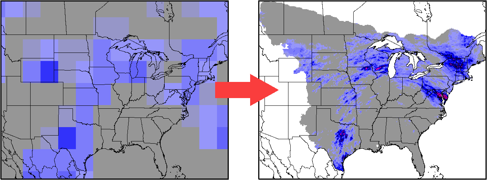

Downscaled Climate Projections
Introduction
Data Summary
- Spatial Resolution: 0.1 x 0.1 degrees
- Temporal Resolution: Daily
- Spatial Domain: US and southern Canada east of the Rocky Mountains
- Temporal Domain: 1950-2100
- Variables: Precipitation, Maximum Temperature, Minimum Temperature
- 24 CMIP5 climate models
- Future Emission Scenarios: RCP2.6 RCP4.5 RCP6.0 RCP8.5
- Methodology:
- Condition a spatially and temporally varying Probability Density Function (PDF) on the large-scale from observations (NCEP Reanalysis).
- Create spatially and temporally varying PDFs from the de-biased climate models.
- Draw random numbers from the PDFs to generate a spatially and temporally varying "realization" of the small-scale variables that is consistent with the large-scale in the climate models. Currently 3 independent realizations have been generated for temperature and 14 for precipitation.
Obtaining the Data
The full dataset is available from AWS/NOAA.
Here's a README file that describes the dataset.
Updates
An updated dataset based on the CMIP6 models will be available from NOAA shortly. The new domain is the entire U.S. and outlying territories at 7km resolution.
More Information
For more information about the data, please contact:
David Lorenz
dlorenz@wisc.edu
Home